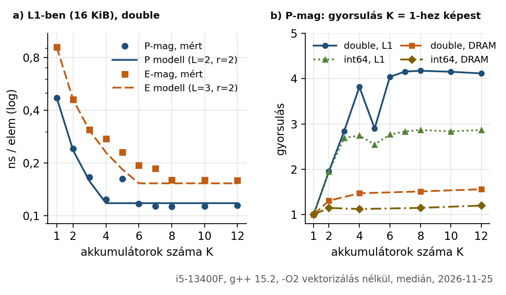

Adjunk össze egy 16 KiB-os, lebegőpontos (double)
tömböt, amely kényelmesen elfér az L1 gyorsítótárban. Az első változat
egyetlen változóba gyűjti az összeget, a második négy részösszeget
vezet, és csak a végén adja össze őket:
// részlet: a code/bench/bench_sum_acc.cpp sablonjának K = 4 esete, kézzel kiírva
double sum4(const double* a, std::size_t n) {
double s0 = 0, s1 = 0, s2 = 0, s3 = 0;
std::size_t i = 0;
for (; i + 4 <= n; i += 4) {
s0 += a[i];
s1 += a[i + 1];
s2 += a[i + 2];
s3 += a[i + 3];
}
for (; i < n; ++i) s0 += a[i];
return ((s0 + s1) + s2) + s3;
}Az i5-13400F processzor egyik teljesítménymagján (P-mag),
-O2 -fno-tree-vectorize -fno-tree-slp-vectorize
kapcsolókkal, 2026-11-25-én mérve az egyakkumulátoros változat
elemenként 0,471 ns-ot, a négyakkumulátoros 0,123 ns-ot igényelt
(mediánok). Ugyanannyi betöltés, ugyanannyi összeadás, nincs SIMD, mégis
3,8-szoros a gyorsulás.
A különbség a munka szerkezetében van: az első ciklusban minden összeadás az előző eredményére vár, a másodikban négy független lánc fut. A processzor annyi utasítást végezhet egyszerre, amennyit a program függőségei megengednek; ezt tanuljuk most kiszámolni.
Egy sokszakácsos konyhában a leghosszabb, egymásra épülő lépéssor (gyúrás, nyújtás, sütés) megszabja a leggyorsabb elkészülést, akárhány szakács dolgozik. A programnál ugyanez a helyzet. Minden utasítás egy csomópont, minden „előbb ennek kell megtörténnie” kapcsolat egy él. Az így kapott függőségi gráf (dependence graph) leghosszabb útja a kritikus út (critical path): ennél gyorsabban semmilyen hardver nem futtatja le a kódot.
Az ábra egy nyolcutasításos blokkot mutat időtengelyen: minden sáv
egy utasítás, a hossza a késleltetése ciklusban. Figyeld meg az a)
részen, hogy az 5. utasítás (lw t0, 12(a0)) csak a 4.
ciklusban indulhat, pedig az adatai semmi korábbitól nem függenek. A
piros pontozott és a narancs szaggatott élek tartják vissza: ezek
pusztán abból adódnak, hogy a kód ugyanazt a regiszternevet
használja újra. A b) részen ezek eltűnnek, és a második számítás az
elsővel párhuzamosan fut.
Definíció. Legyen az utasítás a programsorrendben a előtt. Ha
| Típus | Példa (, majd ) | Mi mozog az élen? | Feloldható-e? |
|---|---|---|---|
| RAW | mul t2, t0, t1 → sw t2, 8(a0) |
egy érték | nem: az értékre várni kell |
| WAR | mul t2, t0, t1 → lw t0, 12(a0) |
semmi, csak a név | igen, másik regiszterrel |
| WAW | lw t0, 0(a0) → lw t0, 12(a0) |
semmi, csak a név | igen, másik regiszterrel |
| vezérlési | beq … → a következő utasítás |
a döntés | elágazásbecsléssel átmenetileg áthidalható |
A WAR és a WAW név szerinti függőség (name dependence): nem folyik köztük adat. A regiszterhiány tünetei, mert a fordítónak a véges számú regiszternevet (RISC-V: 32, x86-64: 16) újra kell hasznosítania. A sorrendi futószalagban nem okoztak hazárdot (lásd Adathazárdok: forwarding és stall), átrendezéskor viszont számítanak.
Memórián át ugyanez a három típus létezik, csak a „név” egy cím. Ugyanahhoz a változatlan bázisregiszterhez képest nem átfedő eltolások biztosan függetlenek, különben a fordítónak óvatosnak kell lennie. A hardver oldalát Memóriafüggőségek: load/store queue és függőségbecslés tárgyalja.
Definíció. A függőségi gráf csúcsai az utasítások, élei a függőségek. Minden csúcshoz késleltetés tartozik ciklusban. Ideális gépen (korlátlan egység) a utasítás legkorábbi kezdése
azaz egy utasítás akkor indulhat, amikor minden bemenő éle teljesült, a blokk pedig akkor kész, amikor az utolsó eredmény is megvan.
Az élsúly RAW- és WAW-élen a termelő késleltetése (az értéknek meg kell lennie, illetve az írásoknak sorrendben kell érkezniük). WAR-élen a könyv modellje 1 ciklust számol: elég, ha azután indul, hogy az operandusait kiolvasta.
Definíció. Az utasításszintű párhuzamosság (instruction-level parallelism, ILP) egy kódrészletre
vagyis átlagosan hány utasításnak kell egyszerre „folyamatban lennie” ahhoz, hogy a blokk a kritikus út alatt lefusson. Ez a program (és a késleltetések) tulajdonsága, nem a processzoré; a processzor IPC-je ezt legfeljebb megközelíti.
Az ILP függ attól, mely éleket vesszük figyelembe. Ha a gép átnevezi a regisztereket (lásd Regiszterátnevezés, ROB és spekuláció), csak a RAW-élek maradnak; egy átnevezés nélküli gépen mind.
Továbbvitt eredmény. A függőségek négy fajtája: RAW (valódi, érték folyik), WAR és WAW (név szerinti, átnevezéssel megszüntethető) és vezérlési; egy kód futásának alsó korlátja a késleltetéssel súlyozott kritikus út, az . Erre épül A Tomasulo-algoritmus, a Regiszterátnevezés, ROB és spekuláció és VLIW és EPIC: a fordítóra bízott párhuzamosság.
A statikus ütemezés (static scheduling) azt jelenti, hogy a fordító (nem a hardver) rendezi át az utasításokat úgy, hogy a függőségek megmaradjanak, de a várakozás idejét független munka töltse ki. A legegyszerűbb módszer a lista-ütemezés (list scheduling):
A módszer mohó, ezért nem mindig talál optimális ütemezést.
Egy ciklusmag sokszor fut, ezért itt az egy iterációra jutó idő a kérdés. Két alsó korlát van:
s += a[i] lánc iterációnként legalább az összeadás
késleltetésébe kerül;azaz a ciklus nem lehet gyorsabb sem a leghosszabb körbefutó láncánál, sem a legterheltebb egységénél.
A ciklusgörgetés (loop unrolling) a ciklusmagot többször egymás után írja ki, ritkítva az elágazást és több függetlenül ütemezhető utasítást adva. Önmagában a láncot nem töri meg. Ehhez több akkumulátor (accumulator) kell: részösszeg független láncot ad. Egy olyan ciklusban, ahol elemenként egy összeadás és egy betöltés van, elemenként
ahol a ciklusonként indítható összeadások száma (feltéve, hogy a betöltés nem szűkebb). A két tag a helyen egyenlő: ennyi lánc kell ahhoz, hogy az egységek ne álljanak. Ez a Little-törvény egy esete (folyamatban lévő munka = átbocsátás × késleltetés), amelyet Egy modern mag anatómiája általánosít.
Ennek ára van: a sok akkumulátor regiszternyomást
(register pressure) okoz, a kifogyó regiszterek értékei a verembe
kerülnek (spill); a kód hosszabb, és a maradék elemekhez külön ciklus
kell. Lebegőpontosnál az összeadás nem asszociatív, ezért a részösszegek
bitre más eredményt adhatnak, és a fordító magától
(-fassociative-math nélkül) nem bontja szét a láncot.
Ha a ciklus iterációi függetlenek, nem kell görgetni: az új iteráció elindulhat, mielőtt az előző befejeződött. A szoftveres pipeline (software pipelining, modulo scheduling) úgy ütemezi a magot, hogy ciklusonként (indítási intervallum) induljon új iteráció; alsó korlátja a fenti két korlát maximuma. Rövid bevezető (prolog) tölti fel a „futószalagot”, majd egy lezáró (epilog) üríti ki. Ha egy érték több iteráción átível, több példányt kell tartani belőle (átnevezés a mag kigörgetésével).
Legyen a blokk az ábra nyolc utasítása, a késleltetések:
lw 3, mul 4, sw 1 ciklus.
lw t0, 0(a0) # 1
lw t1, 4(a0) # 2
mul t2, t0, t1 # 3
sw t2, 8(a0) # 4
lw t0, 12(a0) # 5
lw t1, 16(a0) # 6
mul t2, t0, t1 # 7
sw t2, 20(a0) # 81. lépés, élek. RAW: 1→3 (t0), 2→3
(t1), 3→4, 5→7, 6→7, 7→8. Név szerinti élek: 5 felülírja
t0-t, ezért WAR 3→5 és WAW 1→5; ugyanígy WAR 3→6 és WAW
2→6; a 7. utasítás t2-t írja: WAR 4→7 és WAW 3→7. Memóriaél
nincs: az írások (8, 20) és az olvasások (12, 16) ugyanahhoz az
a0-hoz képest nem fednek át.
2. lépés, csak RAW. Az 1., 2., 5., 6. utasítás a 0.
ciklusban indul, a két mul a 3.-ban, a két sw
a 7.-ben. Így
,
.
3. lépés, minden él. Az 5. utasítás legkorábban
-kor
indulhat (WAW az 1.-től, WAR a 3.-tól), a 6. ugyanígy. A 7.: RAW
,
WAW
,
WAR a 4. sw-től
,
tehát 8. A 8. a 12. ciklusban indul,
,
.
A kritikus út 1 → 3 → 4 → 7 → 8: az egyik éle WAR, tehát adatot nem is
visz.
4. lépés, ütemezés egyutas gépen. Ha ciklusonként
egy utasítás indulhat sorrendben, a végrehajtás 18 ciklus. A
lista-ütemező az eredeti kódon 14 ciklusra jut. Ha az 5–8. utasítás
t3, t4, t5 regisztert kap, a
lista-ütemező előrehozhatja a második pár betöltését, és 11 ciklus lesz
az eredmény: a nevek feloldása 3 ciklust ér.
Az archkit.ooo modul ezt számolja ki. Az
analyze a legkorábbi kezdéseket és a kritikus utat
adja:
import sys; sys.path.insert(0, "code")
from archkit import ooo, perf
blokk = """lw t0, 0(a0)
lw t1, 4(a0)
mul t2, t0, t1
sw t2, 8(a0)
lw t0, 12(a0)
lw t1, 16(a0)
mul t2, t0, t1
sw t2, 20(a0)"""
a = ooo.analyze(blokk, kinds=("RAW", "WAR", "WAW"), memory=True)
print(a.table())
for nev, elek in (("minden él", ("RAW", "WAR", "WAW")), ("csak RAW", ("RAW",))):
b = ooo.analyze(blokk, kinds=elek, memory=True)
print(f"{nev:<10} T = {b.length:>2} ILP = {b.ilp:.2f}") # utasítás késl. kezd kész krit.
1 lw t0, 0(a0) 3 0 3 *
2 lw t1, 4(a0) 3 0 3
3 mul t2, t0, t1 4 3 7 *
4 sw t2, 8(a0) 1 7 8 *
5 lw t0, 12(a0) 3 4 7
6 lw t1, 16(a0) 3 4 7
7 mul t2, t0, t1 4 8 12 *
8 sw t2, 20(a0) 1 12 13 *
minden él T = 13 ILP = 0.62
csak RAW T = 8 ILP = 1.00Az ütemezők összevetése az eredeti és az átnevezett blokkon:
uj = blokk.split("\n")
uj[4:] = ["lw t3, 12(a0)", "lw t4, 16(a0)", "mul t5, t3, t4", "sw t5, 20(a0)"]
uj = "\n".join(uj)
for nev, kod in (("eredeti", blokk), ("átnevezett", uj)):
s = ooo.inorder_schedule(kod, width=1)
r = ooo.list_schedule(kod, width=1)
sorrend = [k + 1 for k in r.order()]
print(f"{nev:<11} sorrendi: {s.length:>2} ütemezett: {r.length:>2} {sorrend}")eredeti sorrendi: 18 ütemezett: 14 [1, 2, 3, 5, 6, 4, 7, 8]
átnevezett sorrendi: 18 ütemezett: 11 [1, 2, 5, 6, 3, 7, 4, 8]Az eredeti blokkon a második betöltéspár csak a sw elé
kerülhet, a mul elé nem; az átnevezett blokkban az 5–6.
betöltés a szorzás elé is mehet.
Most a sum ciklusmagja. A RISC-V egész összeadása 1
ciklusos, ezért a lebegőpontos akkumulátort úgy utánozzuk, hogy a
add késleltetését 4 ciklusra állítjuk (a mutatót léptető
addi marad 1). Ciklusonként 2 betöltés és 4 egyéb
ALU-művelet indulhat:
def sum_body(K):
ertek = ["t0", "t1", "t2", "t3", "t4", "t5", "t6", "a4", "a5", "a6", "a7", "gp"]
akku = ["s2", "s3", "s4", "s5", "s6", "s7", "s8", "s9", "s10", "s11", "a2", "a3"]
sorok = [f"lw {ertek[k]}, {4 * k}(a0)" for k in range(K)]
sorok += [f"add {akku[k]}, {akku[k]}, {ertek[k]}" for k in range(K)]
sorok += [f"addi a0, a0, {4 * K}", "bne a0, a1, -4"]
return "\n".join(sorok)
print(" K rekurrencia erőforrás ciklus/elem")
for K in (1, 2, 4, 8, 12):
b = ooo.loop_bounds(sum_body(K), units={"mem": 2, "alu": 4}, width=8,
latency={"add": 4})
print(f"{K:>2} {b['recurrence']:>11.1f} {b['resource']:>9.1f} {b['bound'] / K:>11.2f}") K rekurrencia erőforrás ciklus/elem
1 4.0 0.8 4.00
2 4.0 1.0 2.00
4 4.0 2.0 1.00
8 4.0 4.0 0.50
12 4.0 6.0 0.50Nyolc akkumulátornál
()
a két korlát találkozik; több már nem segít, mert a betöltőegységek
telítődtek. Végül a szoftveres pipeline egy független iterációkból álló
ciklusra (b[i] = k·a[i]):
skala = """lw t1, 0(a0)
mul t2, t1, t3
sw t2, 0(a1)
addi a0, a0, 4
addi a1, a1, 4
bne a0, a2, -20"""
egyseg = {"mem": 1, "alu": 2, "mul": 1}
b = ooo.loop_bounds(skala, units=egyseg, width=4)
print(f"rekurrencia: {b['recurrence']:.0f}, erőforrás: {b['resource']:.0f}, "
f"egy iteráció kritikus útja: {ooo.analyze(skala).length}")
kezd = ooo.modulo_schedule(skala, 2, units=egyseg, width=4)
for sor, t in zip(skala.split("\n"), kezd):
print(f"{sor:<18} kezdés {t} (fázis {t % 2}, fokozat {t // 2})")rekurrencia: 1, erőforrás: 2, egy iteráció kritikus útja: 8
lw t1, 0(a0) kezdés 0 (fázis 0, fokozat 0)
mul t2, t1, t3 kezdés 3 (fázis 1, fokozat 1)
sw t2, 0(a1) kezdés 7 (fázis 1, fokozat 3)
addi a0, a0, 4 kezdés 0 (fázis 0, fokozat 0)
addi a1, a1, 4 kezdés 0 (fázis 0, fokozat 0)
bne a0, a2, -20 kezdés 1 (fázis 1, fokozat 0)Egy iteráció 8 ciklusig tart, mégis 2 ciklusonként indul új, így
állandósult állapotban 4 iteráció fedi egymást (a „fokozat” az átfedés
mélysége). A modell csak a RAW-éleket nézi; a valódi fordító az
a1 átfedő példányait korrigált eltolással kezeli.
A bench_sum_acc program ugyanezt méri C++-ban,
double elemekkel. A fordítói kimenet (g++ 15.2, a fenti
kapcsolók, -masm=intel)
-re
és
-re
a belső ciklus:
.L355: # K = 1
addsd xmm0, QWORD PTR [rdi]
add rdi, 16
addsd xmm0, QWORD PTR -8[rdi]
cmp rdi, rax
jne .L355
.L333: # K = 4
addsd xmm1, QWORD PTR [rax]
addsd xmm4, QWORD PTR 8[rax]
add rax, 32
addsd xmm3, QWORD PTR -16[rax]
addsd xmm2, QWORD PTR -8[rax]
cmp rdx, rax
jne .L333A
ciklust a fordító kigörgette, de mindkét addsd az
xmm0-ba gyűjt: a lánc nem tört meg.
meta, rows = perf.read_bench_csv("figures/data/ca037-akkumulatorok.csv")
print(meta["cpu"], meta["date"][:10])
def ns(core, typ, K, bytes_=16384):
return next(r["median_ns_per_elem"] for r in rows if (r["core"], r["type"], r["accum"],
r["bytes"]) == (core, typ, K, bytes_))
print(" K P double E double P int64 (ns/elem, 16 KiB)")
for K in (1, 2, 3, 4, 5, 6, 8, 12):
print(f"{K:>2} {ns('P', 'double', K):8.3f} {ns('E', 'double', K):8.3f} "
f"{ns('P', 'int64', K):7.3f}")13th Gen Intel(R) Core(TM) i5-13400F 2026-11-25
K P double E double P int64 (ns/elem, 16 KiB)
1 0.471 0.918 0.217
2 0.241 0.461 0.112
3 0.166 0.309 0.081
4 0.123 0.275 0.079
5 0.162 0.230 0.085
6 0.117 0.193 0.079
8 0.113 0.160 0.076
12 0.115 0.159 0.076
sum mért ideje az akkumulátorok számának
függvényében (i5-13400F, 2026-11-25): a) P- és E-mag a
késleltetési/átbocsátási modellel, b) gyorsulás L1-ben és
DRAM-banA modellben a ciklusidőt a
pontból illesztettük, a paraméterek: P-mag
,
E-mag
ciklus, mindkettőn
(ellenőrizendő: [S-AGNER], [S-UOPS]). A modell
és
körül jósol telítést. A P-magon ez nagyjából teljesül; az E-magon a
telítés csak
-nál
jön, a P-mag
pontja pedig kiugrik (a minták kettészakadnak 0,13 és 0,16 ns között) –
erre ebből a mérésből nem tudunk biztos magyarázatot adni. Az
int64 sor
-nál
0,076–0,079 ns, ami a 3 betöltőport korlátjával fér össze (kb. harmad
ciklus elemenként 4,5 GHz-nél; a portszám ellenőrizendő, [S-AGNER]). A
becsült órajel 4,1 és 4,6 GHz között változott, a ciklusértékek ezért
közelítők.
A b) panel a figyelmeztetés: ha a tömb 128 MiB (a gyorsítótárakban
nem fér el), 12 akkumulátor is csak 1,56-szoros gyorsulást hoz
double-ra. Ott már a memória sávszélessége a korlát, nem az
összeadások lánca.
Továbbvitt eredmény. Egy redukciós ciklusban
elemenként legalább
ciklus kell (késleltetési, illetve átbocsátási korlát), a telítéshez kb.
független akkumulátor; a mért sum P-magon K = 1-ről 4-re
3,8-szor gyorsult, DRAM-ból viszont a memória-sávszélesség lesz a
korlát. Ezt használja Egy modern mag
anatómiája, AVX és NEON a gyakorlatban és
az Esettanulmány: mérésvezérelt
optimalizálás.
A függőségi gráf interaktív lapján:
add mellett a név
szerinti élek 6-ról 12 ciklusra nyújtják a blokkot. Állítsd az
add késleltetés csúszkát 4-re: mindkét kapcsolóállásban
15 ciklus. Miért nem számít itt az átnevezés?-fassociative-math (a -ffast-math további
szemantikát is eldob).sum
idején?Az 1–2. feladatban a blokk (késleltetés: lw 3,
mul 4, minden más 1):
lw t0, 0(a0) # 1
addi t1, t0, 1 # 2
add t0, a1, a2 # 3
mul t2, t0, t1 # 4
sw t2, 4(a0) # 5lw,
egy mul, egy add az akkumulátorba, két
addi, egy bne. A add 3, a
mul 4 ciklus; ciklusonként 2 memóriaművelet, 1 szorzás, 4
ALU-művelet indulhat, a gép 6 széles. Mi a korlát egy akkumulátorral, és
hány akkumulátor (görgetési tényező) kell a legjobb elemenkénti
időhöz?blokk átnevezett
változatát egy 2 széles gépen, ahol ciklusonként 1 memóriaművelet és 1
szorzás indulhat. Mennyi a sorrendi és az ütemezett idő?archkit.ooo.loop_bounds segítségével megkeresi a legkisebb
-t
(1–12), amelynél a sum_body(K) elemenkénti korlátja eléri a
minimumát,
mellett (2 memóriaművelet, 6 ALU, szélesség 12). Vesd össze a mért
görbével.double mérését 16 KiB-ra és 128 MiB-ra
és
mellett. Számítsd ki a gyorsulásokat és a 128 MiB-os,
eset elérési sávszélességét. Mit mond ez a korlátról?A program utasításai között valódi (RAW), név szerinti (WAR, WAW) és
vezérlési függőségek vannak. A függőségi gráf késleltetéssel súlyozott
leghosszabb útja, a kritikus út, alsó korlát a futási időre, az
pedig a kinyerhető párhuzamosság. A név szerinti élek átnevezéssel
megszüntethetők, ezért a statikus ütemezés sikere a regiszterek számától
is függ. Ciklusban a késleltetési és az átbocsátási korlát közül a
nagyobb dönt: redukciónál elemenként
ciklus, a telítés
akkumulátornál. A mért sum K = 4-gyel 3,8-szor gyorsabb,
DRAM-ból viszont a sávszélesség korlátoz. A szoftveres pipeline a
független iterációkat
ciklusonként indítja. Az archkit.ooo modul a függőségi
gráfot, a lista-ütemezést és a ciklus két korlátját számolja ki; a
hardveres, futás közbeni átrendezés a következő alfejezetek témája.
1. feladat. RAW: 1→2 (t0), 3→4
(t0), 2→4 (t1), 4→5 (t2). WAR:
2→3 (a 2. olvassa, a 3. írja t0-t). WAW: 1→3
(t0). Memóriaél nincs: a sw 4(a0) és a
lw 0(a0) ugyanazon a0-hoz képest nem fed
át.
2. feladat. Minden éllel: kezdések 0, 3, 4, 5, 9, a
5. utasítás a 10. ciklusban kész,
,
.
A 3. utasítás a WAR miatt (2. kezdése + 1 = 4) vár. Név szerinti élek
nélkül a 3. már a 0. ciklusban indulhat, a mul a 4.-ben (a
2.-tól: 3 + 1), a sw a 8.-ban:
,
,
kritikus út 1 → 2 → 4 → 5. A kis nyereség oka, hogy a kritikus út nagy
része valódi lánc.
3. feladat. Egy akkumulátorral a lánc
add késleltetése 3 ciklus; erőforrás: memória 2/2 = 1,
szorzó 1/1 = 1, ALU 4/4 = 1, szélesség 7/6 ≈ 1,17. A korlát 3 ciklus
elemenként.
-szoros
görgetésnél az erőforrásigény elemenként 1 ciklus (az egyetlen szorzó),
a lánc
.
Tehát
a legkisebb, amellyel elérjük az 1 ciklus/elemet;
sem jobb, mert a szorzó már telített. Ellenőrzés:
def dot_body(K):
t = ["t1", "t2", "t3", "t4", "t5", "t6", "a4", "a5", "a6", "a7", "s2", "s3"]
akku = ["t0", "s10", "s11", "gp"]
sorok = []
for k in range(K):
x, y, z = t[3 * k:3 * k + 3]
sorok += [f"lw {x}, {4 * k}(a0)", f"lw {y}, {4 * k}(a1)",
f"mul {z}, {x}, {y}", f"add {akku[k]}, {akku[k]}, {z}"]
sorok += [f"addi a0, a0, {4 * K}", f"addi a1, a1, {4 * K}", "bne a0, a2, -4"]
return "\n".join(sorok)
for K in (1, 2, 3, 4):
b = ooo.loop_bounds(dot_body(K), units={"mem": 2, "mul": 1, "alu": 4}, width=6,
latency={"add": 3})
print(f"K={K}: {b['bound'] / K:.2f} ciklus/elem")K=1: 3.00 ciklus/elem
K=2: 1.50 ciklus/elem
K=3: 1.00 ciklus/elem
K=4: 1.00 ciklus/elem4. feladat. Sorrendben a második betöltéspár csak az
első sw után indul, ezért 18 ciklus. Ütemezve a négy
betöltés az 1–4. ciklusban megy (egy memóriaport), az első
mul az 5.-ben, a második a 7.-ben (a 6. betöltés a 4.
ciklusban indult, eredménye a 7.-ben kész), a két sw a 9.
és a 11. ciklusban: 11 ciklus.
egys = {"mem": 1, "mul": 1}
print(ooo.inorder_schedule(uj, width=2, units=egys).length,
ooo.list_schedule(uj, width=2, units=egys).length)18 11A második kiadási hely itt nem segít, mert a memóriaport a szűk keresztmetszet.
5. feladat.
def min_k(L):
korlat = [ooo.loop_bounds(sum_body(K), units={"mem": 2, "alu": 6}, width=12,
latency={"add": L})["bound"] / K for K in range(1, 13)]
legjobb = min(korlat)
return next(K for K, c in zip(range(1, 13), korlat) if c <= legjobb + 1e-9), legjobb
for L in (2, 3, 4):
K, c = min_k(L)
print(f"L={L}: K*={K}, {c:.2f} ciklus/elem")L=2: K*=4, 0.50 ciklus/elem
L=3: K*=6, 0.50 ciklus/elem
L=4: K*=8, 0.50 ciklus/elemA mért P-magos görbe () K = 4 körül lapul el, az E-magos () csak K = 8-nál, a modell 6-os jóslatánál később: a modell csak a két fő korlátot tartalmazza, egyéb hatásokat nem.
6. feladat.
for meret in (16384, 134217728):
a1, a12 = ns("P", "double", 1, meret), ns("P", "double", 12, meret)
print(f"{meret // 1024:>7} KiB: {a1:.3f} → {a12:.3f} ns, gyorsulás {a1 / a12:.2f}, "
f"{8 / a12:.1f} GB/s") 16 KiB: 0.471 → 0.115 ns, gyorsulás 4.12, 69.9 GB/s
131072 KiB: 0.518 → 0.332 ns, gyorsulás 1.56, 24.1 GB/sL1-ben a láncok szétbontása 4,1-szeres gyorsulást hoz. DRAM-ból a 12 akkumulátoros változat 24 GB/s körül olvas: ez egyetlen szál memória-sávszélessége, amelyet több összeadás sem tud növelni. A eset is csak kicsit lassabb (0,518 ns), mert ott a lánc és a memória korlátja közel van egymáshoz.